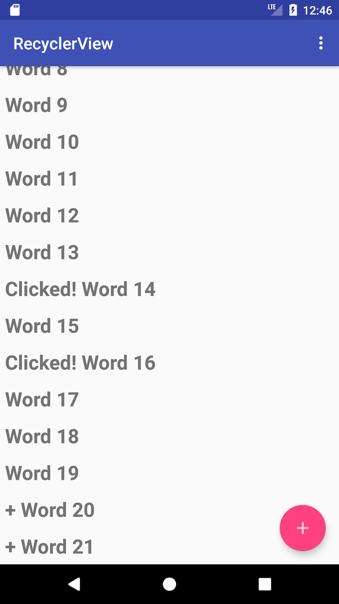
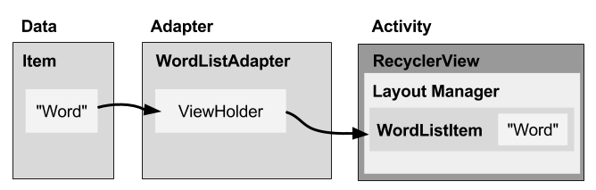
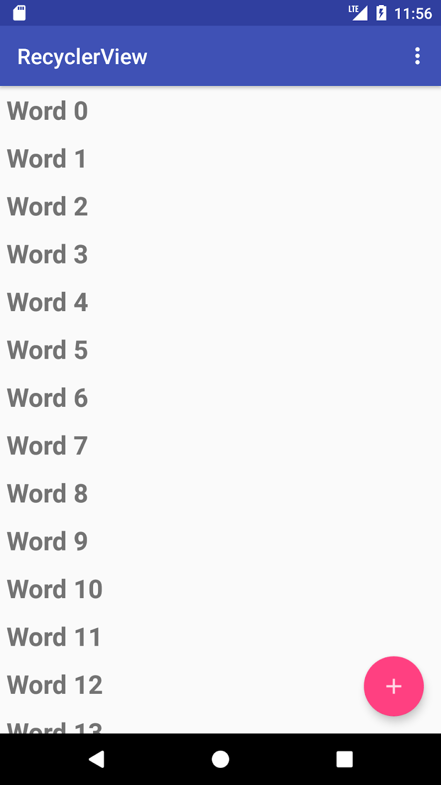
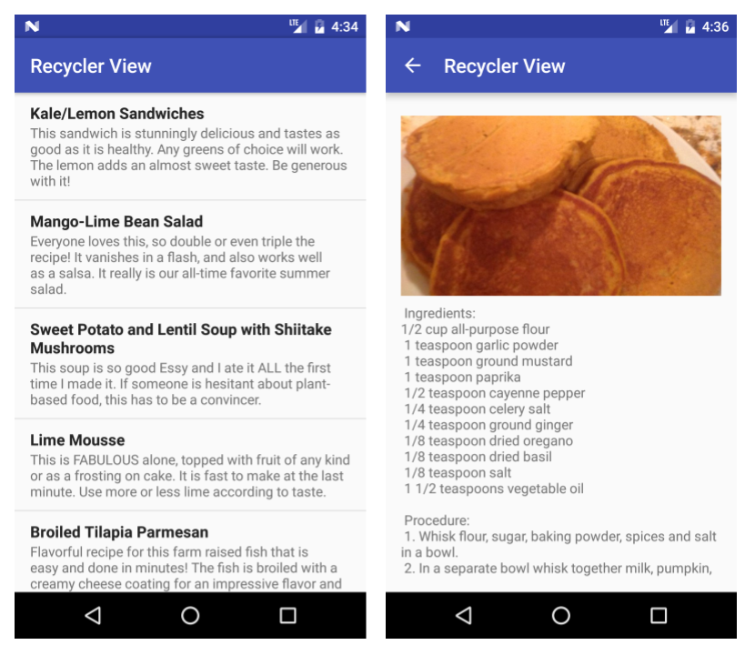

この実践的なコードラボは、Android Developer Fundamentals (Version 2) コースの Unit 2: User experience の一部です。このコースでは、コードラボを順を追って学習することで、このコースを最大限に活用することができます。
コースのコードラボの完全なリストについては、Codelabs for Android Developer Fundamentals (V2)を参照してください。
すべてのコンセプトチャプター、アプリ、スライドへのリンクを含むコースの詳細については、Android Developer Fundamentals (Version 2)を参照してください。
注：このコースでは、「codelab」と「実践」という用語を入れ替えて使用しています。
序章
似たようなデータ項目のリストを表示、スクロール、操作できるようにすることは、一般的なアプリの機能です。スクロール可能なリストの例としては、連絡先リスト、プレイリスト、セーブしたゲーム、写真ディレクトリ、辞書、ショッピング リスト、ドキュメントのインデックスなどがあります。
スクロールビューの実用的な使い方としては、ScrollViewを使用してViewやViewGroupをスクロールします。ScrollViewは使いやすいですが、スクロール可能な長いリストにはお勧めできません。
RecyclerViewはViewGroupのサブクラスで、スクロール可能なリストを表示するためのよりリソース効率の高い方法です。画面に表示されているかどうかわからないアイテムごとにビューを作成するのではなく、 RecyclerView は限られた数のリストアイテムを作成し、表示されているコンテンツのために再利用します。
この実習では、以下のことを行います。
RecyclerViewを使用してスクロール可能なリストを表示する。
各リスト項目にクリックハンドラを追加します。
フローティングアクションボタン（FAB）を使用してリストにアイテムを追加します。ユーザーに実行させたいプライマリアクションには、FABを使用します。
すでに知っておくべきこと
できるようになるはずです。
Android Studioでアプリを作成して実行することができます。
レイアウトエディタを使用して UI 要素を作成および編集し、XML コードを直接入力し、Java コードから要素にアクセスすることができます。
文字列リソースを作成して使用する。
getText() を使用して、ビュー内のテキストを文字列に変換します。
onClick() ハンドラをビューに追加します。
Toast メッセージを表示します。
あなたが学ぶこと
スクロール可能なリストにアイテムを表示するために RecyclerView クラスを使用する方法。
スクロールして表示されるようになったアイテムを動的に RecyclerView に追加する方法。
ユーザーが特定のアイテムをタップしたときにアクションを実行する方法
FABを表示し、ユーザーがタップしたときにアクションを実行する方法
やること
RecyclerViewを使用してアイテムのリストをスクロール可能なリストとして表示し、クリック動作をリスト アイテムに関連付ける新しいアプリを作成します。
FAB を使用して、ユーザーが RecyclerView にアイテムを追加できるようにします。
RecyclerViewアプリは、長いスクロール可能な単語のリストを表示するために RecyclerViewを使用する方法を示しています。データセット（単語）、 RecyclerView自体、そしてユーザーが取ることのできるアクションを作成します。
単語をタップするとクリックされたことになります。
フローティングアクションボタン(FAB)をタップすると、新しい単語が追加されます。

RecyclerViewを表示する前に、表示するデータが必要です。このタスクでは、アプリの新しいプロジェクトとデータセットを作成します。より洗練されたアプリでは、データは内部ストレージ（ファイル、SQLiteデータベース、保存された設定）、別のアプリ（連絡先、写真）、インターネット（クラウドストレージ、Google Sheets、またはAPI付きのデータソース）から取得することができます。データの保存と取得については、データストレージの章で説明します。この演習では、MainActivity の onCreate() メソッドでデータを作成してシミュレーションします。
1.1. プロジェクトとレイアウトを作成する
Android Studioを起動します。
RecyclerViewという名前で新規プロジェクトを作成し、Basic Activityテンプレートを選択し、レイアウトファイルを生成します。
クリッカブル画像の使用の章で紹介したBasic Activityテンプレートでは、Activityレイアウト（activity_main.xml）にフローティングアクションボタン（FAB）とアプリバー、Activityコンテンツのレイアウト（content_main.xml）が用意されています。
アプリを実行します。RecyclerViewアプリのタイトルと "Hello World "が画面に表示されるはずです。
Gradle関連のエラーが発生した場合は、Android StudioのインストールとHello Worldの実行の実践に記載されているようにプロジェクトを同期してください。
1.2. データを作成するコードを追加
このステップでは、["Word 1", "Word 2", "Word 3", ....] のように、末尾が数字の増加で終わる 20 個の単語文字列の LinkedList を作成します。
MainActivity を開き、mWordList リンクド リストのプライベート メンバ変数を追加します。
onCreate() メソッド内に、mWordList に単語を入力するコードを追加します。
このコードは、文字列 "Word "をiの値を増やしながら連結しています。この演習に必要なデータセットはこれだけです。
1.3. FABのアイコンを変更する
今回の実践では、FABを使ってリストに挿入する新しい単語を生成します。基本アクティビティのテンプレートにはFABが用意されていますが、そのアイコンを変更したい場合があります。別のレッスンで学んだように、Android StudioのアイコンセットからFAB用のアイコンを選択することができます。以下の手順に従ってください。
プロジェクト > Android ペインで res を展開し、描画可能なフォルダを右クリック（または Control キーを押しながらクリック）します。
新規作成] > [イメージアセット] を選択します。イメージアセットの設定ダイアログが表示されます。
ダイアログ上部のドロップダウンメニューからアクションバーとタブアイテムを選択します。
名前］フィールドの［ic_action_name］を［ic_add_for_fab］に変更します。
クリップアート画像(Clipart:の隣にあるAndroidロゴ)をクリックして、アイコンとしてクリップアート画像を選択します。アイコンのページが表示されます。プラス（＋）記号など、fabに使いたいアイコンをクリックします。
テーマ」ドロップダウンメニューから「HOLO_DARK」を選択します。これにより、アイコンが暗い色（または黒）の背景に対して白に設定されます。次へ] をクリックします。
アイコンパスの確認ダイアログで終了をクリックします。
ヒント。アイコンの追加の詳細については、「Image Asset Studio でアプリのアイコンを作成する」を参照してください。
この実習では、RecyclerViewにデータを表示します。必要なものは以下の通りです。
表示するデータです。mWordList を使用します。
リスト項目を含むスクロール・リスト用の RecyclerView。
1 つのデータ項目のレイアウト。すべてのリスト項目は同じように見えます。
レイアウト・マネージャー。RecyclerView.LayoutManagerは、View要素の階層とレイアウトを処理します。RecyclerViewには、その中に含まれるリスト項目の配置を管理するための明示的なレイアウトマネージャが必要です。このレイアウトは、垂直、水平、またはグリッドのいずれかになります。縦型の LinearLayoutManager を使用します。
アダプタを使用します。RecyclerView.Adapter は、データを RecyclerView に接続します。データは RecyclerView.ViewHolder に準備されます。生成したワードをビューに挿入して更新するアダプタを作成します。
ViewHolderです。アダプタの内部には、アイテムのレイアウトから1つのアイテムを表示するためのView情報を含むViewHolderを作成します。
次の図は、データ、アダプタ、ViewHolder、およびレイアウト マネージャの関係を示しています。

これらの部分を実装するには、次のようにする必要があります。
RecyclerView アプリの MainActivity XML コンテンツ レイアウト（content_main.xml）に RecyclerView 要素を追加します。
1 つのリスト項目（WordListItem）の XML レイアウト・ファイル（wordlist_item.xml）を作成します。
ViewHolder（WordViewHolder）を持つアダプタ（WordListAdapter）を作成します。データを取得して ViewHolder に配置し、レイアウト・マネージャに表示することを知らせるメソッドを実装します。
MainActivity の onCreate() メソッドで RecyclerView を作成し、アダプタと標準のレイアウト・マネージャで初期化します。
これらを一つずつやっていきましょう。
2**.1. content_main.xmlのレイアウトを変更する**。
RecyclerView要素をXMLレイアウトに追加するには、以下の手順に従います。
RecyclerViewアプリでcontent_main.xmlを開きます。ConstraintLayoutの中心に "Hello World "TextViewが表示されます。
TextタブをクリックしてXMLコードを表示します。
TextView要素全体を以下のように置き換えます。
RecyclerViewはサポートライブラリの一部なので、フルパス(android.support.v7.widget. RecyclerView)を指定する必要があります。
2**.2. 1つのリスト項目のレイアウトを作成する**.
アダプタは、リスト内の 1 つの項目のレイアウトを必要とします。すべての項目で同じレイアウトを使用します。そのリスト項目のレイアウトは、リサイクル・ビューとは別にアダプタで使用されるため、別のレイアウト・リソース・ファイルで指定する必要があります。
TextViewを使用した垂直LinearLayoutを使用して、簡単な単語項目のレイアウトを作成します。
アプリ > res > レイアウト フォルダを右クリックし、新規作成 > レイアウト リソース ファイルを選択します。
ファイル名を wordlist_item とし、OK をクリックします。
新しいレイアウト ファイルで、テキスト タブをクリックして XML コードを表示します。
ファイルで作成した ConstraintLayout を、以下の属性を持つ LinearLayout に変更します（適宜リソースを抽出してください）。
単語のテキストビューをLinearLayoutに追加します。単語のIDとしてwordを使用します。
2.3 TextView属性からスタイルを作成する
スタイルを使用して、要素が表示属性のグループを共有できるようにすることができます。スタイルを作成する簡単な方法は、すでに作成したUI要素のスタイルを抽出することです。wordlist_item.xml内のTextViewという単語のスタイル情報を抽出します。
wordlist_item.xml がまだ開いていない場合は、wordlist_item.xml を開きます。
wordlist_item.xml で作成した TextView を右クリック（または Control-click）して、Refactor > Extract > Style を選択します。Android スタイルの抽出ダイアログが表示されます。
スタイルの名前を word_title とし、他のオプションはすべて選択したままにします。可能な場合はスタイルを使用する」オプションを選択します。次に、[OK]をクリックします。
プロンプトが表示されたら、プロジェクト全体にスタイルを適用します。
values > styles.xml で word_title スタイルを検索して調べます。
wordlist_item.xmlがまだ開いていない場合は、再度開きます。テキストビューは、以下に示すように、個々のスタイリングプロパティの代わりにスタイルを使用するようになりました。
2**.4. アダプタを作成する**。
Androidでは、リスト内のView項目とデータを接続するためにアダプタ(アダプタクラスから)を使用します。アダプタには多くの種類があり、カスタムアダプタを書くこともできます。このタスクでは、単語のリストを単語リストのビュー項目に関連付けるアダプタを作成します。
データをビュー項目に接続するには、アダプタはビュー項目について知っている必要があります。アダプタは、View 項目と RecyclerView 内での位置を記述する ViewHolder を使用します。
まず、ワード・リストのデータと、それを表示する RecyclerView との間のギャップを埋めるアダプタを作成します。
java/com.android.example.recyclerview を右クリックし、新規作成 > Java クラスを選択します。
クラス名を WordListAdapter とします。
WordListAdapter には、次のシグネチャを指定します。
WordListAdapter は、RecyclerView 用の汎用アダプタを拡張して、アプリに固有のビューホルダを使用し、WordListAdapter の内部で定義されています。WordViewHolder は、まだ定義していないため、エラーが表示されます。
クラス宣言（WordListAdapter）をクリックし、ペインの左側にある赤い電球をクリックします。メソッドの実装を選択します。
どのメソッドを実装するかを尋ねるダイアログが表示されます。3 つのメソッドをすべて選択して OK をクリックします。
Android Studio はすべてのメソッドに空のプレースホルダを作成します。onCreateViewHolderとonBindViewHolderはどちらもまだ実装されていないWordViewHolderを参照しています。
2.5 アダプタの ViewHolder を作成する
ViewHolder を作成するには、以下の手順に従います。
WordListAdapter クラスの内部に、このシグネチャを持つ新しい WordViewHolder インナークラスを追加します。
デフォルトのコンストラクタが存在しないというエラーが表示されます。エラーの詳細は、赤下線のコードの上にマウスカーソルを置くか、 エディタペインの右端にある赤い水平線の上にマウスカーソルを置くと見ることができます。
テキストビューとアダプタ用のWordViewHolderインナークラスに変数を追加します。
インナークラスWordViewHolderに、ワードXMLリソースからViewHolder TextViewを初期化するコンストラクタを追加し、そのアダプタを設定します。
アプリを実行してエラーがないことを確認してください。まだ何も表示されていない状態です。
LogcatタブをクリックしてLogcatペインを表示し、E/RecyclerViewに注意してください。アダプタが接続されていません。別のステップで RecyclerView にアダプタを取り付けることになります。
2.6 アダプタへのデータの保存
アダプタにデータを保持する必要があり、WordListAdapter には、データから単語リストを初期化するコンストラクタが必要です。以下の手順に従ってください。
データをアダプタに保持するには、WordListAdapter で文字列のプライベートなリンクされたリストを作成し、それを mWordList と呼びます。
これで、getItemCount()メソッドを埋めて、mWordListのサイズを返すことができるようになりました。
WordListAdapter は、データから単語リストを初期化するコンストラクタが必要です。リスト項目のビューを作成するには、WordListAdapter はリスト項目の XML をインフレーションする必要があります。その作業にはレイアウト・インフレーターを使用します。LayoutInflator は、レイアウト XML の記述を読み取り、それを対応するビュー項目に変換します。WordListAdapter でインフレーターのメンバ変数を作成することから始めます。
WordListAdapter のコンストラクタを実装します。コンストラクタには、コンテキスト パラメータと、アプリのデータを持つ単語のリンクされたリストが必要です。メソッドは、mInflater の LayoutInflator をインスタンス化し、mWordList を渡されたデータに設定する必要があります。
このコードで onCreateViewHolder() メソッドを記入します。
onCreateViewHolder() メソッドは、 onCreate() メソッドに似ています。これは、アイテムのレイアウトを膨らませ、 レイアウトとアダプタを含む ViewHolder を返します。
onBindViewHolder()メソッドに以下のコードを記入します。
onBindViewHolder() メソッドは、データをビューホルダーに接続します。
アプリを実行して、エラーがないことを確認してください。
2**.7. アクティビティに RecyclerView を作成する**。
これでViewHolderを持つアダプタができたので、最後に RecyclerViewを作成して、データを表示するためのすべてのピースを接続します。
MainActivityを開きます。
RecyclerView とアダプタのメンバ変数を追加します。
MainActivityのonCreate()メソッドに、RecyclerViewを作成し、アダプタとデータを接続する以下のコードを追加します。コメントで各行を説明しています。このコードは mWordList の初期化後に挿入する必要があります。
アプリを実行してください。
単語のリストが表示され、リストをスクロールすることができます。

アイテムのリストを見るのも面白いですが、ユーザーがそれらを操作できればもっと楽しくて便利です。RecyclerViewがユーザーの入力にどのように反応するかを見るために、各アイテムにクリックハンドラをアタッチします。アイテムがタップされるとクリックハンドラが実行され、そのアイテムのテキストが変更されます。
RecyclerViewが表示するアイテムのリストは動的に変更することができます。ビヘイビアを追加する方法はいくつかあります。1つはフローティングアクションボタン(FAB)を使用する方法です。例えば、Gmailでは、FABは新しいメールを作成するために使用されます。この実用的な方法としては、リストに挿入する新しい単語を生成します。より便利なアプリの場合は、ユーザーからデータを取得することになります。
3**.1. アイテムをクリックに反応させる**。
WordListAdapter を開きます。
WordViewHolder クラスのシグネチャを View.onClickListener を実装するように変更します。
class WordViewHolder extends RecyclerView.ViewHolder
View.OnClickListener { を実装します。
クラスのヘッダーと赤い電球をクリックして、必要なメソッドのスタブを実装しますが、この場合は onClick() メソッドだけです。
onClick() メソッドのボディに以下のコードを追加します。
onClickListener を View に接続します。このコードを WordViewHolder のコンストラクタに追加します (this.mAdapter = アダプタ行の下)。
アプリを実行します。アイテムをクリックするとテキストが変化します。
3**.2. FAB**にビヘイビアを追加する
このタスクでは、FABのアクションを実装します。
単語のリストの最後に単語を追加します。
データが変更されたことをアダプタに通知します。
挿入された項目までスクロールします。
以下の手順に従ってください。
MainActivity を開きます。onCreate() メソッドで、アクションを取るための onClick() メソッドを持つ FloatingActionButton に OnClickListener() を設定します。onClick() メソッドを以下のように変更します。
アプリを実行します。
単語の一覧をスクロールしてアイテムをクリックします。
FABをクリックして項目を追加します。
画面を回転させるとどうなりますか？画面を回転させたときにアプリの状態を保持する方法は後のレッスンで学びます。
Android Studioプロジェクト。リサイクルビュー
注意: コーディングの課題はすべてオプションであり、後のレッスンの前提条件ではありません。
課題1: オプションメニューを変更して、1つのオプションのみを表示するようにします。リセット。このオプションは、単語のリストを元の状態に戻し、何もクリックされておらず、余分な単語もない状態にします。
課題 2: リストの各項目のクリック リスナーを作成するのは簡単ですが、データが多いとアプリのパフォーマンスが低下することがあります。これをより効率的に実装する方法を研究してください。これは高度な課題です。概念的に考えることから始めて、実装例を探します。
RecyclerView は、アイテムのスクロール可能なリストを表示するためのリソース効率の高い方法です。
各リスト項目のビューを作成するには、アダプタは、LayoutInflator を使用してリスト項目の XML レイアウト・リソースを膨らませます。
LinearLayoutManager は RecyclerView のレイアウト・マネージャで、縦または横にスクロールするリストのアイテムを表示します。
GridLayoutManager は、グリッド内のアイテムを表示する RecyclerView レイアウト・マネージャです。
StaggeredGridLayoutManagerは、千鳥格子でアイテムを表示する RecyclerView レイアウトマネージャです。
データを RecyclerView に接続するには RecyclerView.Adapter を使用します。データを RecyclerView.ViewHolder に用意します。これは、View アイテムと RecyclerView 内での位置を記述するものです。
RecyclerView 内のマウスクリックを検出するために View.onClickListener を実装します。
関連するコンセプトのドキュメントは、4.5: RecyclerViewです。
Android Studio のドキュメントです。
Android Studio ユーザーガイド
Image Asset Studioでアプリのアイコンを作成
Android の開発者向けドキュメント。
RecyclerView
レイアウトインフレーター
RecyclerView.LayoutManager
リニアレイアウトマネージャ
グリッドレイアウトマネージャ
StaggeredGridLayoutManager
コーディネータレイアウト
制約レイアウト
RecyclerView.Adapter
RecyclerView.ViewHolder
View.onClickListener
RecyclerViewでリストを作成する
動画で紹介しています。
RecyclerViewのアニメーションと舞台裏（Android Dev Summit 2015
このセクションでは、インストラクターが主導するコースの一部として、このコードラボを通して作業する学生のための可能な宿題をリストアップします。以下のことを行うのはインストラクター次第です。
必要に応じて宿題を割り当てる。
宿題の提出方法を学生に伝える。
宿題の割り当てを評価します。
インストラクターは、これらの提案を少しまたは彼らが望むように使用することができますし、彼らが適切であると感じる他の宿題を割り当てるために自由に感じる必要があります。
あなた自身でこのコードラボに取り組んでいる場合は、これらの宿題を使ってあなたの知識をテストすることができます。
アプリをビルドして実行する
RecyclerViewを使用してレシピのリストを表示するアプリを作成します。各リスト項目には、レシピの名前と簡単な説明を表示する必要があります。ユーザーがレシピ（リスト内の項目）をタップすると、レシピのテキストを表示するアクティビティを開始します。
レシピの名前と説明には、別々のTextView要素とスタイリングを使用してください。
完全なレシピのためにプレースホルダテキストを使用することができます。
オプションとして、完成した料理の画像を各レシピに追加します。
上へ」ボタンをクリックすると、ユーザーはレシピのリストに戻ります。
下のスクリーンショットは、簡単な実装例を示しています。あなたのアプリは、必要な機能を持っている限り、非常に異なった外観にすることができます。

以下の質問に答えてください。
質問1
RecyclerViewに関する次の記述のうち、誤っているのはどれか。1つ選んでください。
RecyclerViewは、スクロール可能なリストを表示するためのよりリソース効率の高い方法です。
リストの1つの項目だけにレイアウトを提供する必要があります。
すべてのリスト項目は同じように見えます。
RecyclerViewでView要素の階層とレイアウトを処理するためのレイアウト・マネージャは必要ありません。
質問2
次のうち、アダプタにビュー項目と RecyclerView 内の位置を提供する必要がある主なコンポーネントはどれか? 1 つ選んでください。
リサイクル・ビュー
RecyclerView.Adapter
RecyclerView.ViewHolder
AppCompatActivity
質問3
RecyclerViewでユーザーのクリックをリッスンして応答するには、どのインターフェースを実装する必要がありますか？1 つを選択してください。
View.onClickListener
RecyclerView.Adapter
RecyclerView.ViewHolder
View.OnKeyListener
アプリを提出して採点を受ける
学年別ガイダンス
アプリが以下の機能を持っていることを確認してください。
レシピのタイトルと短い説明のスクロール可能なリストを表示する RecyclerView をインプリメントします。
コードは RecyclerView、 RecyclerView.Adapter、 RecyclerView.ViewHolder、および View.OnClickListener を継承または実装しています。
リスト項目をクリックすると、完全なレシピを表示するアクティビティが開始されます。
AndroidManifest.xml ファイルでは、レシピ・ビューの Up ボタンをクリックすると、レシピのリストに戻るように親関係を定義しています。
ViewHolderには、2つのTextView要素を持つレイアウトが含まれています。例えば、2つのTextView要素を持つLinearLayoutなどです。